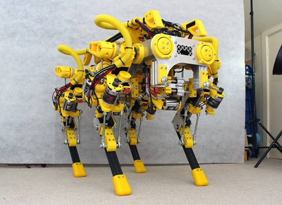

President
Name
Is responsible for general management of club.
Combat Robotics is a team under UR Robotics that builds 1-30lb combat robots for various competitions. No prior experience required, but enthusiasm wanted. This is primarily an electro-mechanical project with a heavy emphasis on mechanical fabrication, but there are a lot of areas to explore within like 3D modeling and simulation, project engineering, solid mechanics, electrical design and assembly, and 3D printing. We are looking to take on people's ideas for building some smaller robots this year. If you have any questions, please email our team leader Daniel.
Workshop Coordinator
Name
Organizes workshops
Combat Robotics is a team under UR Robotics that builds 1-30lb combat robots for various competitions. No prior experience required, but enthusiasm wanted. This is primarily an electro-mechanical project with a heavy emphasis on mechanical fabrication, but there are a lot of areas to explore within like 3D modeling and simulation, project engineering, solid mechanics, electrical design and assembly, and 3D printing. We are looking to take on people's ideas for building some smaller robots this year. If you have any questions, please email our team leader Daniel.
Lab Coordinator
Name
Maintains the lab
Combat Robotics is a team under UR Robotics that builds 1-30lb combat robots for various competitions. No prior experience required, but enthusiasm wanted. This is primarily an electro-mechanical project with a heavy emphasis on mechanical fabrication, but there are a lot of areas to explore within like 3D modeling and simulation, project engineering, solid mechanics, electrical design and assembly, and 3D printing. We are looking to take on people's ideas for building some smaller robots this year. If you have any questions, please email our team leader Daniel.
Vice-President
Name
Aides in the running of the club
Combat Robotics is a team under UR Robotics that builds 1-30lb combat robots for various competitions. No prior experience required, but enthusiasm wanted. This is primarily an electro-mechanical project with a heavy emphasis on mechanical fabrication, but there are a lot of areas to explore within like 3D modeling and simulation, project engineering, solid mechanics, electrical design and assembly, and 3D printing. We are looking to take on people's ideas for building some smaller robots this year. If you have any questions, please email our team leader Daniel.
Secretary
Name
Responsible for external correspondence
Combat Robotics is a team under UR Robotics that builds 1-30lb combat robots for various competitions. No prior experience required, but enthusiasm wanted. This is primarily an electro-mechanical project with a heavy emphasis on mechanical fabrication, but there are a lot of areas to explore within like 3D modeling and simulation, project engineering, solid mechanics, electrical design and assembly, and 3D printing. We are looking to take on people's ideas for building some smaller robots this year. If you have any questions, please email our team leader Daniel.
Business Manager
Name
Budgetary functions of the club
Combat Robotics is a team under UR Robotics that builds 1-30lb combat robots for various competitions. No prior experience required, but enthusiasm wanted. This is primarily an electro-mechanical project with a heavy emphasis on mechanical fabrication, but there are a lot of areas to explore within like 3D modeling and simulation, project engineering, solid mechanics, electrical design and assembly, and 3D printing. We are looking to take on people's ideas for building some smaller robots this year. If you have any questions, please email our team leader Daniel.